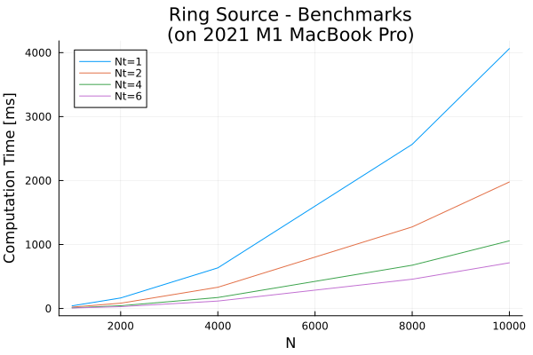

Benchmarking
Code benchmarking for Wired.jl (speed tests).
All benchmarks performed using a 2021 M1 MacBook Pro (6+2 physical cores, 16GB RAM).
Basic Problem
The benchmark problem is simple: determine how fast the program can calculate the Biot Savart Law for different numbers of sources and of node (output) points.
Wire Sources
Each Wire has an effect on each output point, and there are often many sources and many output locations in a problem, so this benchmark assumes equal numbers of sources and output points (N). For example, for N=1000, there are 1000 source Wire objects and 1000 output node locations, for a total of 1000 x 1000 = 1M computations.
Computational time in milliseconds for different Wire problem sizes using various numbers of threads:
| N | Computations | 1 Thread | 2 Threads | 4 Threads | 6 Threads |
|---|---|---|---|---|---|
| 1000 | 1M | 7.5 | 3.9 | 2.1 | 1.5 |
| 2000 | 4M | 29.4 | 15.0 | 7.7 | 5.4 |
| 4000 | 16M | 116.1 | 58.7 | 30.5 | 21.7 |
| 8000 | 64M | 494 | 248 | 125 | 89.2 |
| 10000 | 100M | 752 | 388 | 200 | 135 |
On this machine, the increase in computation time is roughly proportional to the problem size (N^2), and roughly proportional to the number of threads until Nt=4, when the benefit of using more threads for these problem sizes starts diminishing.
In other words - the program can run 100 million calculations in 1/8 of a second on a several-generation old consumer laptop.

Ring Sources
When using the Ring object as a source, the scaling follows a similar trend. However, each Ring is about 6x more computational expensive than a Wire source. This is acceptable, as replacing a Ring with Wire objects would require many more than 6x Wire's.
Computational time in milliseconds for different Ring problem sizes using various numbers of threads:
| N | Computations | 1 Thread | 2 Threads | 4 Threads | 6 Threads |
|---|---|---|---|---|---|
| 1000 | 1M | 41.5 | 21.8 | 10.7 | 7.6 |
| 2000 | 4M | 164.3 | 82.6 | 42.9 | 28.6 |
| 4000 | 16M | 634.9 | 331.9 | 171.5 | 116.1 |
| 8000 | 64M | 2566.3 | 1275.2 | 676.4 | 457.8 |
| 10000 | 100M | 4062.6 | 1978.1 | 1057.8 | 714.1 |
